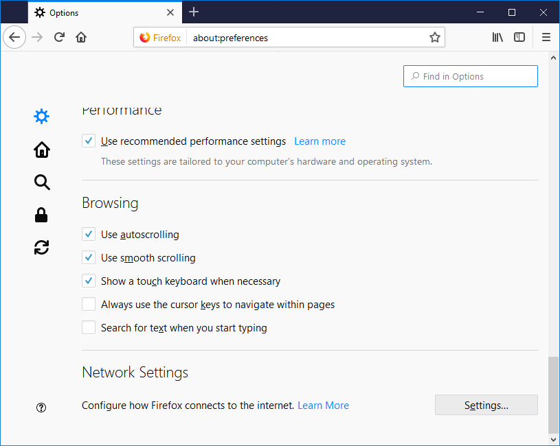
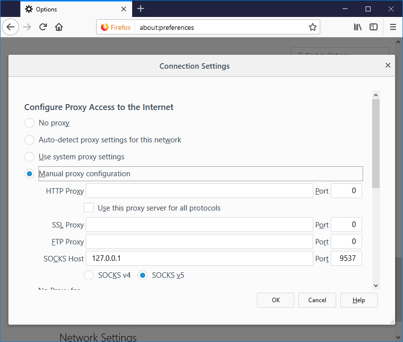
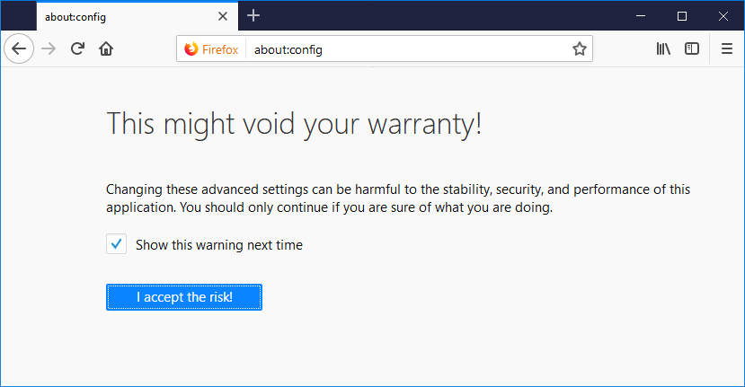
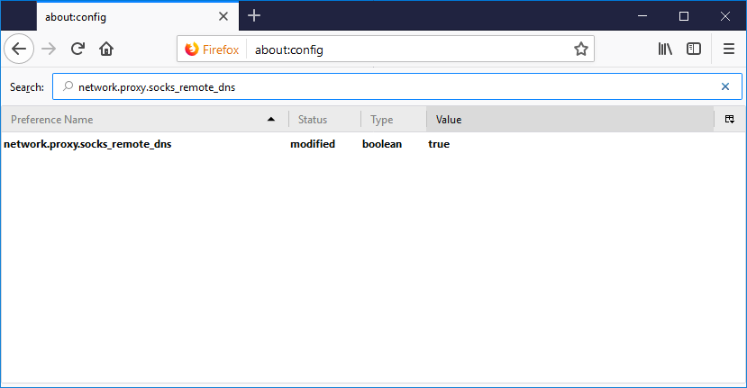
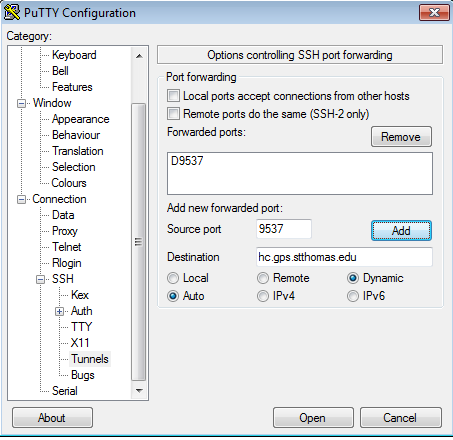

Using a browser to tunnel into a Hadoop cluster to inspect worker node logs.
Adnan Al-Alawiyat & Brad Rubin 10/17/2013
Updated 9/22/2014 (change from MR1 to MR2 YARN)
In order to inspect work node logs in a Hadoop cluster that is behind a firewall with only SSH access, a browser must be setup for tunneling.
Our Hadoop cluster is behind a firewall, and only the SSH port (22) is open. Furthermore, our worker nodes use private IP addressing. The technique described here will allow a browser to access the cluster via an SSH tunnel. This not only allows access to the JobTracker web page for status, but also allows drill down to logs on individual worker nodes. We must also tunnel the DNS requests to the cluster to allow the worker node names to resolve to their private IP addresses via the hosts file. With Firefox, you must dedicate the browser for cluster use. With Chrome, you can use the browser for both the cluster and normal web browsing. We describe instuctions for Windows, Mac, and Linux.
Using Firefox on Windows
Set up a SOCKS local server via an SSH connection to cluster, which would forward traffic from port 9537 to the cluster, as described in PuTTY Setup section. Note: Any unused port can be used for this.
Follow the instructions for Firefox Setup.
Using Firefox on Mac/Linux
Set up a SOCKS local server via an SSH connection to cluster, which would forward traffic from port 9537 to the cluster, by running the following command:
ssh -D 9537 -C <user_name>@hc.gps.stthomas.edu
Follow the instructions for Firefox Setup.
Firefox Setup
- In Firefox address bar, Enter "about:preferences"
Click on Settings button on the bottom in Network Settings section

In Connection Settings window:
- Check "Manual proxy configurations"
- For SOCKS Host , enter "127.0.0.1"
- For SOCKS Host port, enter "9537"
- Select "SOCKS v5" and select OK

In Firefox address bar, Enter "about:config" and confirm to prompt to be careful:

Search for network.proxy.socks_remote_dns and toggle to true:

In Firefox go to http://hc.gps.stthomas.edu:8088
Note: After following steps above, Firefox is now dedicated to tunneling, even after a restart.
To disable tunneling for Firefox:
- In Firefox address bar, Enter "about:preferences"
Click on Settings button on the bottom in Network Settings section
In Connection Settings window:
- Check "Use system proxy settings"

In Fiefox address bar, Enter "about:config" and confirm to prompt to be careful:
Search for network.proxy.socks_remote_dns and toggle to false:

PuTTY Setup
- Start Putty and enter the following in HostName field, where user_name is your login name:
user_name@hc.gps.stthomas.edu
Accept 22 as default port number:

On left hand side, expand SSH category and click on Tunnels:

In Tunnels settings window, enter the following settings, then select "Add"
Source port: 9537
Destination: hc.gps.stthomas.edu
Select Dynamic and Auto radio buttons:

Finally select Open button and enter your password
Using Chrome on Windows
Set up a SOCKS local server via an SSH connection to cluster, which would forward traffic from port 9537 to the cluster, as described in PuTTY Setup section.
Make sure Chrome is not currently running and start a new instance from command line that uses proxy server from step 1 above:
%CHROME_BIN% --proxy-server="socks://127.0.0.1:9537"
Note: Chrome will use proxy server only for current running instance. After Chrome is restarted, it will operate as normal without a proxy.
Using Chrome on Linux
Set up a SOCKS local server via SSH connection to cluster, which would forward traffic from port 9537 to the cluster, by running the following command:
ssh -D 9537 -C <user_name>@hc.gps.stthomas.edu
Make sure Chrome is not currently running and start a new instance from command line that uses proxy server from step 1 above:
google-chrome --proxy-server="socks://127.0.0.1:9537"
Note: Chrome will use proxy server only for current running instance. After Chrome is restarted, it will operate as normal without a proxy.
Using Chrome on Mac
Set up a SOCKS local server via SSH connection to cluster, which would forward traffic from port 9537 to the cluster, by running the following command:
ssh -D 9537 -C <user_name>@hc.gps.stthomas.edu
Make sure Chrome is not currently running and start a new instance from command line that uses proxy server from step 1 above:
/Applications/Google\ Chrome.app/Contents/MacOS/Google\ Chrome --proxy-server="socks://127.0.0.1:9537"
Note: Chrome will use proxy server only for current running instance. After Chrome is restarted, it will operate as normal without a proxy.